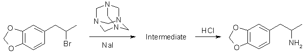
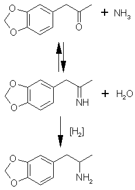
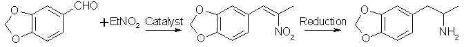
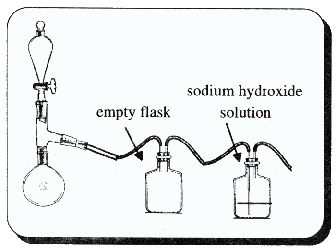

|
MDA is slightly more simple to make than MDMA and still quite rewarding. It is a psychedelic in true spirit. It has been described as a
"stoning intoxication" with a full dose. The appearance of smoke rings as visual hallucinations has been ascribed to this drug. Anorexia
and pupil dilation accompany MDA as with other psychedelics and overall it is a pleasant trip. As closely related to MDMA as it is, though;
MDA lacks the wonderful empathogenic qualities that makes MDMA so special.
We now turn our attention to the synthesis for ecstacy of which there are several choices. A simple modification in most of these will yield Eve (100-200 mg/dose, 3-5 hour duration).
Hexamethylenetetramine MethodThis method is analogous to the one used in the previous chapter. To produce MDA, we simply substitute bromosafrole or the like as the alkyl halide. This method hasn't been reported in the scientific literature that I know of for MDA. A long reaction time (1 month) is reccommended based on the yield reported for phenethylamine (54% after 3 weeks) in the article previously cited. This is not too bad considering all you are doing is setting the reaction flask to the side for a while. To substitute iodosafrole use 290 grams (1 mole) or chlorosafrole 199g (1 mole). When substituting iodosafrole omit the sodium iodide (or potassium iodide). Reductive Amination This general method utilizes piperonylacetone and ammonium chloride as the starting materials. These two compounds react in an equilibrium to form an imine. The imine is then reduced to MDA. Two methods of reducing the imine are given.Sodium Borohydride Reduction[42]In the following reaction, 10 times the theoretical amount of ammonium chloride is used to push the equilibrium of the reaction to the right in the formation of the intermediate imine compound. When the imine is formed it is reduced by the hydride to the amine, MDA.To a solution of 20 grams of ammonium chloride in 110 ml of methanol are added 6.6 grams of piperonylacetone (0.037 mole) and then 3 grams of sodium cyanoborohydride. The mixture is stirred at ambient temperature, and concentrated (12 M) HCl is added with a dropper or pipet as required to maintain pH at neutrality (pH 7 as determined by universal pH paper); 31.5% muriatic acid will suffice even though it is less concentrated. The reaction is complete 36 hours folowing the addition of 1000ml water containing 5ml concentrated HCl (6ml of muriatic acid). The reaction mixture is extracted twice with 150 ml of methylene chloride (discard these extractions). The reaction is made basic with 25% sodium hydroxide (red litmus turns blue), and extracted with 3x150ml methylene chloride, the extracts are pooled together and the methylene chloride is distilled out. The oil that remains is distilled at reduced pressure (0.2 mmHg; bp 85-95°C) and the recovered oil is dissolved in 60 ml of isopropyl alcohol (100%) and acidified with concentrated HCl (blue litmus turns red). An equal volume of ether is added and the crystals should spontaneously form. They are filtered out, washed with a 50/50 isopropyl alcohol/ether solution and then ether alone. The author of the article cited likes this final method of crystallization. This is not necessary. After distillation of the oil, dissolve the oil in ether (or toluene or methylene chloride) and pass HCl gas into the solution until no more crystals form. Filter out the crystals and let dry. Aluminum Amalgam Reduction[43]72.5g of aluminum foil is cut into one inch squares and placed into a 3000ml erlenmeyer flask or other suitable glass container. A solution of 1.8 grams of mercuric chloride (HgCl2) in 2530 ml water is added, and the mixture is stirred occasionally over 30 minutes to amalgamate the aluminum. The solution is poured off and the foil is washed with four one-liter portions of water.To the amalgam is added, in sequence, 80g of ammonium chloride in 101ml of water, 302ml of isopropyl alcohol (100%), 244ml of 25% NaOH solution, 89g (0.5 moles) of piperonylacetone, and then 588ml of isopropyl alcohol. The mixture is swirled occasionally for two hours, and kept below 60°C by cooling with an ice bath as necessary. The mixture is then filtered through Celite (a diatomaceous silicate powder which is placed in a layer over the filter paper before filtering, it is sold by chemical companies as Celite), and the filter cake is washed thoroughly with methanol. Combine the liquid filtrates and distill off the methanol (65°C), isopropyl alcohol (82°C) and the water (100°C). Dissolve the oil in 200ml of ether, and extract the MDA into two 500 ml portions of 3N HCl. The acid solution is washed with three portions of methylene chloride equal in volume to the acid solution (you will probably have to wash portions of the solution at a time unless you have a huge separatory funnel). The acid solution is basified with excess 25% sodium hydroxide solution (red litmus turns blue) and the liberated oil is extracted into three 500ml portions of methylene chloride.
The methylene chloride solution is dried with magnesium sulfate. The drying agent is filtered out and the methylene chloride distilled out.
The residual oil is distilled under reduced pressure and the distilled oil then dissolved in ether Nitrostyrene MethodThis method utilizes piperonal as the starting material and condenses it with nitroethane. The nitrostyrene compound then formed is reduced to MDA. Reduction with lithium aluminium hydride (LAH) and with an electrochemical cell are covered, but it is possible that reduction with metals such as zinc powder and acetic acid, tin powder and hydrochloric acid, or iron powder and hydrochloric acid may work. The general method of using these reagents is covered in Robert L. Augustine, Reduction: Techniques and Application in Organic Synthesis under the chapter Dissolving Metal Reductions. Nitrostyrene Preparation[44]To a solution of 15 grams of piperonal in 80 ml glacial acetic acid, add 15 ml nitroethane followed by 10g of cyclohexylamine. The mixture is heated with a boiling water bath for 6 hours. Remove from heat, dilute with 10ml water and cool in an ice bath overnight (place ice bath and reaction mixture in the refrigerator to keep the ice from melting too quick). Bright yellow crystals should precipitate. These are filtered from the cold solution and allowed to dry. Yield ~10g.
A general procedure described by Gairaud and Lappin[45] uses ammonium acetate as the base catalyst for the
condensation. It is as follows:
LAH for ReductionA suspension of 20g LAH in 250 ml of anhydrous THF (tetrahydrofuran - this solvent eagerly sucks water out of the air so don't leave it exposed to the air for long) is placed under a nitrogen atmosphere and stirred with a magnetic stirrer (see chapter 5 under safrole synthesis for a nitrogen atmosphere apparatus). There is added, dropwise, 18 grams of the nitrostyrene dissolved in THF and the reaction mixture is refluxed for 36 hours. After being brought back to room temperature, the excess hydride is destroyed with 15 ml isopropyl alcohol, followed by 15 ml of 15% NaOH. An additional 50 ml of water is added to complete the conversion of the aluminum salts to a loose, white, easily filtered solid. This is removed by filtration and the filter cake washed with additional THF. The combined filtrate and washings are distilled to remove the solvents. The residue is dissolved in dilute sulfuric acid (15%) and washed with three 75ml portions of CH2Cl2 (methylene chloride). Make the aqueous solution basic with 25% NaOH and extract it with three 100ml portions of methylene chloride. Distill off the solvent and then distill over the residual oil inder reduced pressure. Dissolve the distilled oil in ether (or toluene or methylene chloride) and run a stream of HCl gas through it until no more precipitation occurs. Filter the crystals and allow to dry.Electrochemical Cell For ReductionAlthough I have seen many references to the use of electrochemical cells, the construction of them I have yet to see thoroughly described or for that matter where they can be purchased. This doesn't mean they are impractical, because for clandestine chemistry where the most reliable reduction reagents are watched like a hawk, electrochemical reductions could be the next breakthrough.The cells are basically a container divided by some material which will allow charged ions to pass and therefore allow electricity to flow. The membrane also halts the flow (or reduces it considerably) of the material being reduced. This is necessary because if the membrane wasn't there, the reduced product could travel to the other electrode and become oxidized. The membranes are made of such materials as sintered glass, cellophane, porous ceramic plates etc. This procedure was written for the analogous nitrostyrene which would lead to amphetamine. It should work equally well for MDA[46]. 207g (1 mole) of the nitrostyrene is dissolved with a solvent prepared by mixing one liter of ethanol with 500ml of acetic acid and 500ml of 12N sulfuric acid. The solution is placed in the cathode compartment of a divided electrolytic cell containing a mercury, copper or metal of similar nature as the cathode electrode. The anode can be made of lead. 3N sulfuric acid is placed in the anode compartment. Current is passed equaling ~0.2 amperes/cm2 of cathode surface. The temperature is kept between 30-40°C during the electrolysis until at least 8 Faradays of electricity have passed through the solution. The number of square centimeters of your cathode surface (count both sides if both sides are in contact with the solution) times 0.2 is the amount of current you need flowing through your cell. 1 Faraday is equal to 96485.309 coulombs/mole of electrons and 1 Ampere is equal to 1 coulomb/second. The amount of time in hours the reaction should be run is then 771882.5 divided by the number of Amperes divided by 3600. If you have a total cathode electrode area of 40 cm2 then you need 8 Amperes running through your cell for 26.8 hours. Remove the ethanol and ethyl acetate present through distillation (quit distilling when the temperature approaches 100°C). Basify the remaining solution with 25% NaOH and extract the MDA from the solution with 3 portions of ether (or toluene or methylene chloride). Wash the extract with several portions of calcium carbonate solution, water and then dry with magnesium sulfate. Filter out the drying agent. Pass HCl gas through the solution until no more precipitate is formed. Filter the crystals and wash with ether and allow to dry. Leuckart ReactionThis is a beauty of a reaction to get around the need for difficult to obtain reducing agents. The piperonylacetone and ammonia reacts to form the intermediate imine and formic acid reduces it to the amine, MDA. With excess formic acid present, the amine, MDA, forms an amide which is hydrolyzed back to the amine with acid or alkali (acid usually gives better yields).This method is tagen from an Austran patent[47]. 4 parts piperonylacetone (40g), 11 parts formamide (110g), 0.2 parts glacial acetic acid (2g) and 2 parts water (20 ml) are heated on an oil bath in a distillation apparatus with the thermometer reaching into the reaction mixture. The temperature is raised to 100°C and then more slowly after that. Watch for bubbles of carbon dioxide forming to gauge the rate of the reaction. When they slow down to nearly stopping, raise the temperature a few degrees. Continue this until the temperature has been raised to 150°C. Water will distill over as the temperature rises. Let the reaction cool to about 100°C and add a vacuum adapter to the apparatus. Distill out the excess formamide under vacuum. Boiling points of formamide at various pressures are: 1°C@1mmHg, 109.5°C@10mmHg, 122.5°C@20mmHg and 147°C@60mmHg. The remaining meterial is refluxed 20 minutes with 6 parts KOH (potassium hydroxide, 60g) in 160ml ethanol and 50ml water. The excess ethanol is evaporated on a water bath and the residue diluted with water and filtered over activated charcoal. Basify with 25% NaOH and extract the oil with ether. Run a stream of HCl gas ino the ether until no more precipitate forms. The author claims 70% yield. A general procedure for the Leuckart reaction is given by Crossley and Moore[48] using formic acid, ammonia solution and the ketone. It is as follows: To a three-necked flask equipped with a dropping funnel, thermometer (into the reaction mixture), and down directed condenser (simple distillation apparatus) is added with 105g (1.72 moles) of 28% ammonia solution and 88g (1.72 moles) of 90% formic acid. The temperature is raised to 160°C by distilling out water, and 59.4 grams (0.334 moles) of piperonylacetone is added at one time. The following apparatus can be substituted for a three-neck flask and the piperonylacetone added by momentarily replacing the thermometer with a funnel. The mixture is maintained at 160-170°C for 7 hours and any ketone which distills over is periodically returned to the flask. The formyl derivative is hydrolyzed in the reaction mixture by refluxing for eight hours with 120 ml of concentrated HCl (145ml 31.5% muriatic acid). The mixture is diluted with 200 ml of water and extracted with benzene (or ether etc.) to remove water insoluble material. The aqueous solution is treated with a little charcoal, Norit (or filtered through activated charcoal from pet stores). The solution is made alkaline with ammonia (or alternatively 25% NaOH) and the oil thus produced is extracted with benzene (or ether etc.). The benzene is washed three times with water and dried with sodium sulfate or other drying agent. A stream of HCl gas is fed through the solution until no more precipitate is formed. The precipitate is filtered out and allowed to dry. Elks and Hey[49] describes a similar procedure as above, but using already prepared ammonium formate instead of ammonia and formic acid. Their reported yield was about 20% after purification. Ritter Reaction[50]This reaction utilizes safrole to directly form the formamide (or acetamide) of MDA which is then hydrolyzed to MDA. The following procedures are adapted from procedures used to produce amphetamine from allylbenzene and other amines from their corresponding tertiary alcohol or alkene. A fume hood is required for this procedure due to use of cyanide which can easily be released from acidic solutions as a gas. A mixture of 25ml acetic acid, 34.2g safrole (0.2 moles, 29.5 ml), and 11g (0.2 moles) of 90% sodium cyanide is placed in the flask of the apparatus shown in the picture. To the separatory funnel is added a mixture of 50g (27.2 ml) of concentrated sulfuric acid and 25 ml of acetic acid. This is dripped into the flask over 30 minutes. Shake the reaction mixture occasionally or stir the solution with a magnetic stirring bar. Remove the separatory funnel and still head and allow the mixture to sit overnight. Add a solution of 120g of NaOH in 250 ml water to the mixture. The mixture will heat up and neutralize the acid. A few boiling chips are added and a condenser is fitted into the top of the flask for refluxing. The mixture is refluxed for five hours. The mixture is allowed to cool and the amine and unreacted amide are extracted with ether (or toluene etc). The ether is washed three times with water and the MDA is precipitated by a stream of HCl gas. Filter and let dry. Acetonitrile can be used in place of sodium cyanide to form the acetamide. The acetamide would need to be hydrolyzed with hydrochloric acid though. Refer to Ritter's article under N-(benzylmethylcarbinyl)-acetamide. Substitute the allylbenzene for 32.4g of safrole. Halosafrole MethodThis method is adapted from the procedure written by Biniecki and Krajewski[51]. 49g (0.2 moles) of bromosafrole are added to methanol containing 34g (2 moles) of ammonia (see chapter 3). This is placed in an adequate sized pipe "bomb". This pipe "bomb" should be made of stailess steel and have fine threads on each end. The treads can be wrapped with teflon tape to ensure a good seal. Tighten the pipe ends securely and place the pipe bomb in cooking oil and heat at 130°C for 3-4 hours. The temperature is monitored with a candy thermometer placed into the oil. When the pipe cools, pour the solution into the boiling flask of a simple distillation apparatus and remove the methanol and excess ammonia through distillation. Acidify the residue with hydrochloric acid (muriatic acid) with shaking until a pH of 3 is reached. Extract the solution with ether (or toluene or methylene chloride etc.) to remove unreacted bromosafrole. Basify the aqueous solution with 25% NaOH and extract the oil released with ether (or toluene etc). Place the ether extract in a vacuum distillation apparatus and remove the ether. Apply a vacuum and distill over the MDA. Dissolve the distilled oil in toluene and run a stream of HCl gas in to precipitate the MDA. Filter and allow to dry.The solvent from the bromosafrole extract can be removed and the recovered bromosafrole reused. When substituting iodosafrole use 58g (0.2 moles). After acidifying the residue with hydrochloric acid, decolorize the solution with a little sodium thiosulfate. When substituting chlorosafrole use 40g (0.2 moles) and extend the reaction time to 6-8 hours. Hofmann RearrangementThe Hofmann rearrangement has also been used to produce MDA[52]. MDA was made as an intermediate to isoquinolines being studied. The amide used in the Hofmann rearrangement is also described from piperonal. |